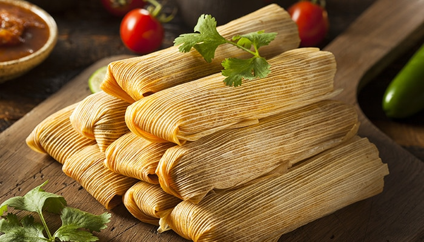

Tamales

Los tamales son uno de los platillos más caracteristicos de la gastronomía mexicana
Sin embargo estos son de distintos sabores, tamaños, formas, colores y olores,
a estos sera destinadas más recetas